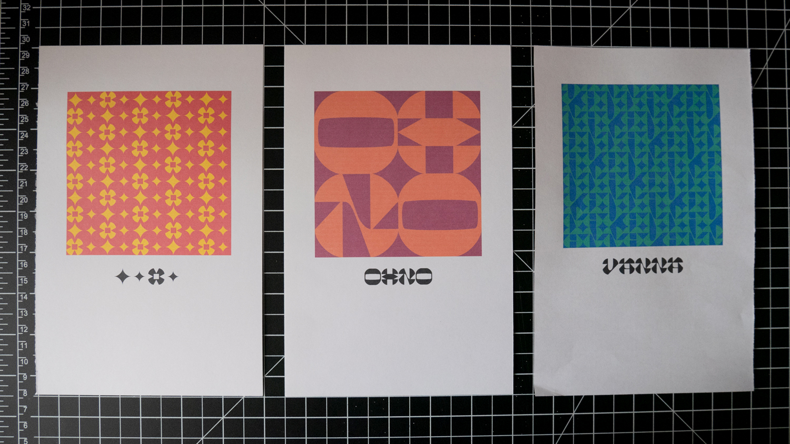

Capstone ProcessSpring 2019
the outlet mall of graphic design
My capstone is two parts: a typeface for display text and pattern making & an interactive type specimen website
+ some context from the previous semester
3.22.19
The working name for the font is now Sine, but I’m still not feeling it because of the strong mathematical connotation. I may change it to Sein which means “to be” in German. I am just not looking forward to questions of “why did you name it that?” I have a feeling that “why not” will be an insufficient answer to most people. I could rebut with “what would you name it” but I am not really feeling like being that person either.
Too much talk about feeling — what works?
Obviously I am just frustrated that I can’t think of a good name. I am making excuses in case I end up with a mediocre one.
I have been thinking about nonsensical ones that sound the way the font looks. Like AZZA (huzzah?). Azzaazzaazzaazza. Which has led me to Zazz, as in pizzazz. Upon “research” of pizzazz and zazz, I am tentatively sold:
Homestar Runner was a little bit before my time so I have no idea what’s going on with this dialogue — dafont.com
I have never described a pixel font as gross, but Syntax Zazz is gross. The person who made it has named themselves Font Bureau on dafont.com. Good god. Main point is there is not a font out there on the internet that’s just called Zazz.
Google — very much wondering if the use example is algorithmically curated
I am vibing with these definitions:
dictionary.com
english.stackexchange.com
Echoic of exuberant cry. That is GREAT. ZAZZ IT UP. At one point I did want to name the font Echo but Typotheque beat me to it.
3.21.19
Came up with a new T. The bulb/tear drop fits the tone, but I think it may be too pure of a shape? I’m getting better at forgetting the rules of the original system and not overthinking letters.
top: new version, bottom: old version
I’m also getting used to the O. It’s not awful. Just need to smooth out the plateaus. People also keep saying they don’t see much wrong with the font and that I should focus on the website. What?
We also had an in-class poster session, and everyone spat out some quick drafts. For me it was an excuse to make more patterny goodness. I don’t want the poster to be a 1-to-1 of the website really. The poster is another opportunity to show the typographic potential of the font. I am having a lot of fun with these colors and letterforms!
Here are a handful:


if I knew how to screen print…
3.10.19
Layout is still in prog, but the colors actually printed closer to how they look on screen than the laser printers at school. From a reasonable distance, the print quality is acceptable. Looking at these makes me wonder if they should resemble polaroids. Conceptually there is no meaning, but formally and mechanically it makes sense.

the 6 year old $30 inkjet still kicks
Everything is taking a chunk of time to get working, unsurprisingly, but it does make the payoff feel that much more satisfying. Formatting how a piece of the website prints is an opaque step above how HTML or CSS code will look. Also glad I don’t have to buy ink. But I gotta buy paper so that it all ties into the website.
L: French Paper Grout Gray, R: website gray
Been looking through French Paper’s catalog, and Grout Gray looks like a perfect match for the gray I’m using on my website! Just debating what paper to get for my book, which I have yet to make a model of. Since the current idea is a cubular book, that requires a good chunk of paper and thus not a small amount of money for one book. Maybe I should make two so that someone can buy the second one… I feel like if I’m going for this sculptural artist book, everything has to go all out too. It should be archival. Or maybe people will actually pay $5 for my font. If just 10 people did that, that’d be nice. That would cover the cost I paid for one weight of Pitch Sans.
Hm.
I added a section to the website saying that typeface is available for download by email request. Someone said to put “for sale,” not just download. I mean, why not make it a free/pay-what-you-want font? I’ve heard people say to hide your first fonts in the depths and never sell it. It’d be a cool to see what people decide to make with it though. The whole point of a font is for someone to interpret it and use it. I do still want it to be mindfully distributed, that way people know the context that this is not a retail font but a study in making type. There’s a lot to learn from seeing how people use your type, too.
3.09.19
Various intermissions from past weeks:
a wild glitch in Chrome due to overlapping points in the font files!
3.08.19
forgot a curly bracket
3.06.19
There hasn’t been much to update on since all I’ve been doing is debugging web code and just refining the physics of the website. I’ve been doing more reading, watching, and listening again about people’s typefaces, especially in preparation for writing the copy explaining my typeface structure.
Kris Sowersby of Klim updated his write-up of Maelstrom after releasing the sans version, and lo and behold he linked to DJR‚Äôs reverse contrast repository, Backasswards üôè Never have I been so happy over a slideshow.
Update: found a video of DJR talking through the slides:
2.27.19
The Unicode character database is a QUARRY OF POSSIBILITIES.
Since my website globally changes color, I have been trying to figure out ways of making it easier. Instead of using SVGs, I made some alphanumeric characters for part of my website. Fun stuff.
2.21.19
Font Friday for this week was a Type Thursday. A lot of messing around to loosen up but also get somewhere, but I made a better I and X. The process has been a back and forth of sketching and vectorizing, I think because I’m still getting comfortable with drawing straight on the computer. At the end I’m going to scan all my sketches.
weird X’s, nice patterns
I & X
L: old, R: new
ZX — pretty pumped about this X

nonsense with O: ghosts & helmets
Some people also tried out the type tester. Naturally, the first thing they type is their name. Since the type tester is already so minimal and restricted, I’m not sure whether I should prompt people on what to type or just let them play around to figure out interesting combinations. The most interesting patterns I’ve made aren’t with real words.
2.12.19
Some updates to the deck:
hover flag-outs for buttons
The palettes are somewhat settled. The tricky things to work out are making yellow and light gray body text easy on the eyes, but I also don’t want to make the global color changes cumbersome with a bunch of variables.
The new navigation setup is also too distracting and the hierarchies aren’t quite right in differentiating between global and local. Thinking the icons are going to have to go too, though they were fun to make! Words are just more direct.
2.10.19
My self portrait, one of the first things I made after transferring into Sam Fox, still holds.

January 2017
2.09.19
Made lil’ refresh and printer icons to match Klim’s Pitch Sans!

I tested several monospace fonts to find one that matched Pitch’s aesthetic and personality but that came with lining figures instead of oldstyle ones, but there really isn’t anything that pairs as well with my typeface that also comes with arrows (Founders Grotesk Mono: if only it had arrows.) The proportions of Pitch are squarer than a lot of monospace faces and it just pairs well with the slight funkiness of my typeface. Looks like Pitch Sans Bold will be the first font I officially buy!

Also working on names. Oof. The placeholder name is MESH but it’s not quite right. Perhaps AxZ?
2.08.19
Gradual letter updates from the latest two Font Fridays:
left: old version, right: updated
Not 100% sure about the new crossbar of the E, but it’s better than the initial one which looks like Demetri Martin’s nose. But really, the new crossbar is trying to match the new contrast system of thinned middles. It’s just awkward right now and looks like it’s about to snap off, and I’m not sure it quite works in the pattern.

EARZ
Also quickly tried some corner pieces (but it ain’t gonna happen):

2.07.19
Still got a lot more palettes to come up with to pick the top 4. Trying to test different forms of contrast (hue, value, saturation).


üåà left: more legible, right: pushing vibrancy
2.05.19
…People like the deck! Main criticisms revolve around navigation and making things look like buttons. Excited to see everyone get to a point where we can all rally behind each other’s projects.
Jonathan’s critique on my first pass at the deck and small iteration after was to lean into a binary concept, as the typeface is for headline and pattern. After some sketching and looking back at website structure research, I got it. The split screen drives the concept and pushes me to think about how the two sides interact and how all the pieces are connected to each other.
The type tester completely serves the typeface now and really fits the context of this minisite better than a generalized type tester. It still allows people to see the type at different scales, too. By reducing the number of buttons and explicit variables, the typeface concept is reinforced and clearly communicated.
In the beginning, I was thinking about making postcards/business cards like the illustrators do to hand out at the capstone exhibition, but the idea was brought up to connect a printer to my laptop so people can print their own patterns they’ve made. It fits the context of the exhibition well and people get a takeaway/exit from the experience.
oh hoo ha ho heee
2.04.19

WOO
1.31.19

Still trying to figure out colors.
1.29.19
First pass at the website deck: still thinking about what the discrete interactive elements will be and how they support the typeface. Right now they’re not that strong as interactions and still quite default. Still working out the aesthetic and the color scheme, as well as the navigation and page structure.
not quite the right tones: elementary, tribal, ornamental/jewel-like, New Mexican; by the end of this session it simplified, per usual
In this draft the structure was based on edges, the critical areas of the typeface. Since this is also a minisite with a relatively small amount of content, I tried to play with an alternative navigational structure with the edge-wide menu sections (it’d be hard to get completely lost in such a simple site). However the logistics of building it would be needlessly complicated and the logic of its movement is confusing without a diagram of the thinking behind it—it’s not clear enough or intriguing in the right way.

basic type specimen / precedent gallery
tangram puzzle to reveal structure rather than textually dictate it
Not really on board with these interactive elements since they don’t do much to convey the typeface’s concept—it’s still very much being interactive for the sake of being interactive. Also the color scheme points me to NYC taxi cabs, caution tape, and Buffalo Wild Wings.
Onward!
1.27.19
Started adding some curves and smoother connections between strokes and the rigor of some of the other letters is starting to change. The letters are more legible and the words are more readable. But the pattern also improved now that the letters are more consistent to each other.


left: old version, right: updated
I’m still a little skeptical about whether or not the pattern is quite visible, but I think since I know the letters intimately I see the words immediately. Scale is also a factor but there may be too much of a 50/50 balance of positive and negative space.
I’m also finding that the strength of the pattern depends on color choice to make foreground/background either ambiguous or distinct. Certain types of contrast can make shapes appear bigger (e.g. white against black vs black against white).

red: flattened U / blue: rounded U
I flattened the bottom of the U to create a consistent diamond shape in the pattern, but the round U may be an alternate for single-line typesetting.
1.21.19

Made a bunch of palettes but none of them are quite working with the tone of my typeface. I’m really sensitive to palettes and a lot of them hold an association to something, so it’ll take me some time to find the right one. I’m looking for something abstract… not able to labeled as tropical or earthy or whatever. Black and white with a pop of color is nice, but I think it’d be good to branch out and at least try something else.
The default of this palette tool also led me to generate 6-color palettes, which is more colors than I really need for my text-based website. The palettes also don’t communicate what the primary and secondary tones are. But it’s a start!
1.16.19
I wrote a simple Drawbot script to generate pattern specs for each character, but right now it involves manually entering each character. There’s a way to automate that. These are one way to judge the strength of each character’s color, texture, and composition in the part to whole relationship.

1.12.19
First digitized rought drafts of the typeface:

character set
how it connects / how it splits apart
Quite a ways to go! The zero tracking and leading version is meant to be the pattern configuration and the tracked out version is meant to be legible (to a degree — I’m not making an easy-on-the-eyes conventional body text). People are having trouble reading it though; it’s too sharp and some of the letters are just weird. It is kind of confusing to me when people think that the I is an O or the T is an R but I can’t argue with what they see.
The letters need to be massaged to be less rigorously geometric and a little more letter-like. I’m glad I worked on an extreme end though because it’s easier to pull back than tighten up.
The rigorous geometry also makes the face feel a little unsophisticated… I like the tone it carries but it’s not 100% likable yet. I also focused too much on the individual letters and lost a little bit of sight on the system. Sure they’re all composed of the same modules, but the flow is not there yet.

randomized words thanks to the word-o-mat Robofont extension
The tricky thing is that a satisfying pattern requires a sense of symmetry and consistency, but legible words carry asymmetry and subtle variation. One point that is often said though is that the negative space and letter spacing play a huge role in readability.
This is all a fun puzzle with an interpretable set of rules. In the end, it’s all up to the eye’s judgement.
1.30.19
I was reading through my journal and found this from November 23, 2018. Seems like an appropriate start to this process log (though a couple of the next entries will be material from previous weeks):
It’s all on the tip of my tongue.
Taeyoon Choi writes of repetition as a form of the sublime. It’s perfect. The sublime just is. It’s not able to be articulated enough. To transcend code & logical function is to create poetry.
So why a typeface? It captures all: repetition → evolution via permutation, individuality yet coherence, abstract image, fundamentally language. Logic & legibility is also not enough; craft, love, & beauty also transcend a typeface. Type is also potentially one of the most purely digital things. Using itself to create itself. Infinitely flat. Pure light & optics. The written word is how anything is. Shapes that when combined become interpretable & therefore meaningful. One can’t help but read.